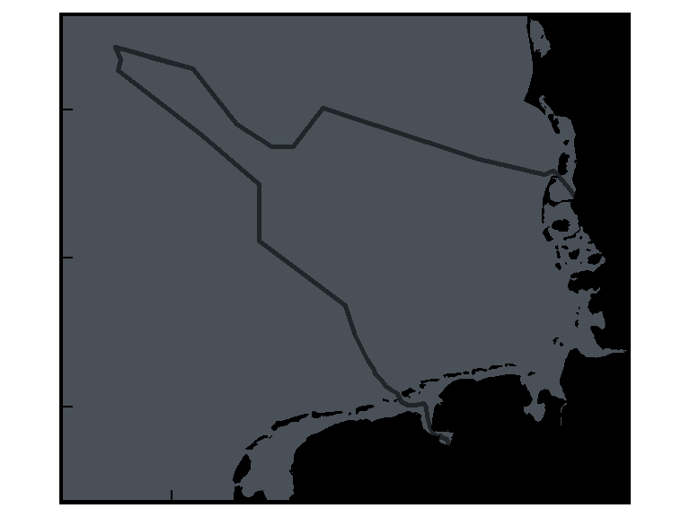
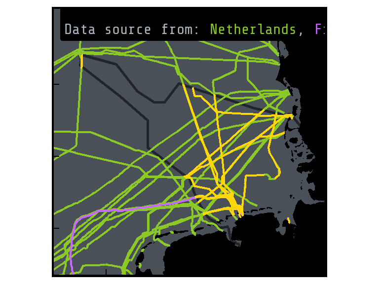
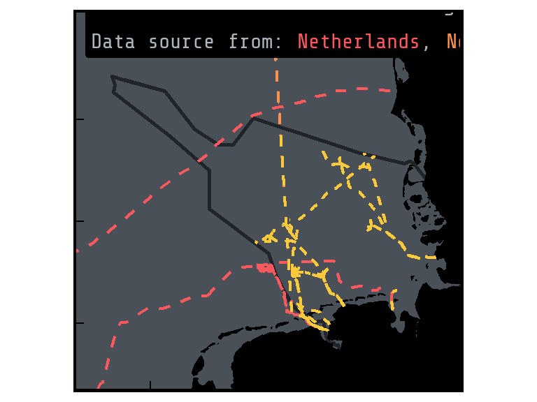
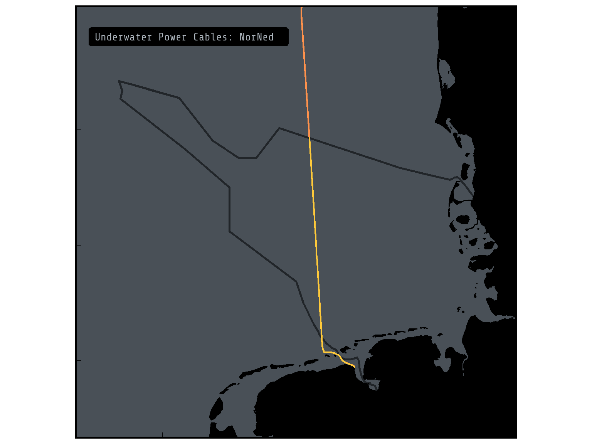

Underwater Power and Telecomunication Cables
R
ggplot2
English
Y2025
In this month’s blog post, I map the underwater cable network of the German North Sea using open data from EMODnet. With R, I explore and visualize both telecommunication and power cables.
Intro
In this month’s blog post, I take a closer look at the network of underwater cables stretching across the German North Sea. Using openly available geospatial data from EMODnet, I downloaded and worked with datasets covering both telecommunication and power cables. With R as my main analysis tool, I walk you through the process of exploring, cleaning, and visualizing the data. Building this map deepened my understanding of how these often-invisible infrastructures are distributed across the seafloor.
Cables
Underwater (submarine, or undersea) cables include cables use for telecommunication and for power. Although limited impacts have been found, the disturbance of the seabed during installation can disrupt benthic communities. Power cables additionally emit electromagnetic fields (EMFs) which might affect sensitive species such as migratory animals. Furthermore, these cables can warm the water surrounding them, but their effects by this are poorly known (see compilation of effects of cables in: Lloret et al. 2022, Hale et al. 2024)
{kind=link}
.jpg)
Image from a underwater cable from BBC
While it’s difficult to pinpoint an exact annual number, estimates suggest that hundreds of kilometers of new submarine cables are installed each year to meet the growing global demand for internet and telecommunications. However, the number of new cables installed varies significantly each year, with the total number of operational and planned cables exceeding 600 in early 2025.

Image from the installation of undersea cable in waters from the Hiddensee island at Germany Mecklenburg-Western Pomerania Baltic Sea from Energy Industry Review
Source
There are two main installations: telecommunications (which for example provide internet access) and power (transporting energy, for example from wind farms to land).
The information from subsea telecommunication and power cables is available at the European Marine Observation and Data Network (EMODnet)
This dataset is updated every year, to download on the EMODnet web portal>Human Activities.
The relevant files for the telecommunication lines in the German North Sea are in the files from German, France and Netherlands telecommunications.
The relevant files for the power lines in the German North Sea are in the files from German, Netherlands and Norway cables.
To have easier access to the files, it is recommended to save them in the same directory.
Data test also available to download at github.
Telecommunications
There are around 1.4 million kilometers (870,000 miles) of telecommunication cables lining the seafloor, connecting every ocean across the globe. Laid end to end, they could stretch across the diameter of the Sun, and they carry an astounding 99% of the world’s digital data. Yet for something so vital, these cables are surprisingly slim, often just 2 cm thick, roughly the width of a garden hose. Source: BBC
Visualization
To visualize the telecommunications data, load your data and call the package ggplot.
library(here)
library(tidyverse)
library(sf)This_directory<-here()Germany_telecommunications<-st_read(paste0(This_directory,"/DE_BSH_CONTIS_Data_CablesLine.shp"))
France_telecommunications<-st_read(paste0(This_directory,"/FR_SIGCables_Submarine_Cables_Routes.shp"))
Netherlands_telecommunications<-st_read(paste0(This_directory,"/NL_Rijkswaterstaat_Telecom_kabels_noordzee.shp"))library(ggplot2)To have reference points, load base shapefiles from the package GermanNorthSea for this exercise.
library(GermanNorthSea)German_EEZ<-st_transform(German_EEZ,4326)
German_land<-st_transform(German_land,4326)Add the attributes and the theme to your base map.
Base_map<-ggplot() +
# Fill colors
geom_sf(data = German_EEZ, color='#212529',fill=NA,alpha=0.1, linewidth = 1)+
geom_sf(data = German_land, colour = 'black', fill = 'black')+
scale_x_continuous(breaks = c(4,6,8),labels = function(x) paste0(x, '\u00B0')) +
scale_y_continuous(breaks = c(53.5,54.5,55.5),labels = function(x) paste0(x, '\u00B0')) +
theme(
axis.text.x = element_blank(),
axis.text.y = element_blank(),
axis.title = element_blank(),
axis.ticks.length=unit(-0.20, "cm"),
axis.ticks = element_line(color="black"),
panel.grid.major = element_blank(),
panel.grid.minor = element_blank(),
panel.background = element_rect(fill = '#495057'))+
xlab('Longitude')+ylab('Latitude')+
theme(panel.border = element_rect(colour = "black", fill=NA, linewidth = 1.5))+
coord_sf(ylim = c(53,56), xlim = c(3,9),
label_axes = list(left = "N", bottom = 'E'))
Base_map
Text
Fonts from goggle can be use in ggplot. In the example, I will be using “Share Tech Mono”.
library(showtext)
showtext_auto()
font_add_google("Share Tech Mono", "Share Tech Mono")Add text and colors for the label.
library(ggtext)Base_map +
geom_sf(data = Netherlands_telecommunications,color='#8ac926',linewidth=0.8)+
geom_sf(data = France_telecommunications,color='#c86bfa',linewidth=0.8)+
geom_sf(data = Germany_telecommunications, color='#ffd60a',linewidth=0.8)+
geom_richtext(aes(x = 2.9, y = 56.1,
label = "<span style='color:#adb5bd'>Underwater Telecommunication Cables crossing the German North Sea.\n
<span style='color:#adb5bd'>Data source from:
<span style='color:#8ac926'>Netherlands</span>,
<span style='color:#c86bfa'>France</span> and
<span style='color:#ffd60a'>Germany</span> (EMODnet).</span>"),
size = 8,fill ="black",label.color = NA, hjust = 0, vjust= 0, inherit.aes = TRUE, family = "Share Tech Mono"
)+
coord_sf(ylim = c(53,56.4), xlim = c(3,9),
label_axes = list(left = "N", bottom = 'E'))
Filter
To visualize a specific cable, use filter functions. For the exercise, lets focus on SEA-ME-WE 3 (South-East Asia – Middle East – Western Europe 3), the world’s longest optical submarine telecommunications cable, linking Asia, the Middle East, and Europe. Source: Wikipedia
unique(France_telecommunications$NAME)Base_map +
geom_sf(data = France_telecommunications %>% filter(NAME %in% c('SEA ME WE3-S10.4','SEA ME WE3-S10.3',
'SEA ME WE3-S10.2','SEA ME WE3-S10.1')),
color='#c86bfa',linewidth=0.8)+
geom_sf(data = Germany_telecommunications %>% filter(name_=='SeaMeWe 3'),
color='#ffd60a',linewidth=0.8)+
geom_sf(data = Netherlands_telecommunications %>% filter(NAAM %in% c('SEA-ME-WE 3 Segment 10.1',
'SEA-ME-WE 3 Segment 10.2 + 10.3')),
color='#8ac926',linewidth=0.8)+
geom_label(aes(x = 2.9, y = 56.3,
label = "Underwater Telecommunication Cable: SEA-ME-WE3 "),
size=7,color='#adb5bd', hjust=0,fill='black',label.size = 0,
family = "Share Tech Mono")+
coord_sf(ylim = c(53,56.4), xlim = c(3,9),
label_axes = list(left = "N", bottom = 'E'))Power Cables
The relevant files for the power lines in the German North Sea are in the files from German, Netherlands and Norway cables.
Germany_voltage<-st_read(paste0(This_directory,"/DE_BSH_CONTIS_High_Voltage_CablesLine.shp"))
Netherlands_voltage<-st_read(paste0(This_directory,"/NL_Rijkswaterstaat_Electra_kabels_noordzee.shp"))
Norway_voltage<-st_read(paste0(This_directory,"/NO_NVE_Sjokabel.shp"))Filter
The data contains “in use” and “planned” cables, keep only those that are “inUse”.
Germany_voltage<-Germany_voltage %>%
filter(status=='inUse')Visualization
Add them in your base map.
Power_cables<-Base_map +
geom_sf(data = Netherlands_voltage,color='#ff595e',linetype = "dashed", linewidth= 0.8)+
geom_sf(data = Norway_voltage,color='#ff924c',linetype = "dashed", linewidth= 0.8)+
geom_sf(data = Germany_voltage, color='#ffca3a',linetype = "dashed", linewidth= 0.8)+
coord_sf(ylim = c(53,56.4), xlim = c(3,9),
label_axes = list(left = "N", bottom = 'E'))+
geom_richtext(aes(x = 2.9, y = 56.1,
label = "<span style='color:#adb5bd'>Underwater Power Cables crossing the German North Sea.\n
<span style='color:#adb5bd'>Data source from:
<span style='color:#ff595e'>Netherlands</span>,
<span style='color:#ff924c'>Norway</span> and
<span style='color:#ffca3a'>Germany</span>.</span>"),
size = 8,fill ="black",label.color = NA, hjust = 0, vjust= 0, inherit.aes = TRUE, family = "Share Tech Mono"
)Coordinate system already present. Adding new coordinate system, which will
replace the existing one.Power_cables
Note than in Germany, many of the power cables are connected to Offshore Wind Farms
German_OWF<-st_transform(GermanNorthSea::OWF_EMODnet,4326)Power_cables+
geom_sf(data = German_OWF, color='#850a0a',fill='#850a0a', alpha=0.5)+
coord_sf(ylim = c(53,56.4), xlim = c(3,9),
label_axes = list(left = "N", bottom = 'E'))Coordinate system already present. Adding new coordinate system, which will
replace the existing one.Examples
NorNed is a high-voltage direct current (HVDC) submarine power cable connecting Norway and the Netherlands. Spanning approximately 580 kilometers under the North Sea, it is one of the longest subsea power interconnectors in the world.
Base_map +
geom_sf(data = Norway_voltage %>% filter(navn=='NorNed'),
color='#ff924c',linewidth=0.8)+
geom_sf(data = Germany_voltage %>% filter(name_=='NorNed'),
color='#ffca3a',linewidth=0.8)+
geom_label(aes(x = 2.9, y = 56.3,
label = "Underwater Power Cables: NorNed "),
size=7,color='#adb5bd', hjust=0,fill='black',label.size = 0,
family = "Share Tech Mono")+
coord_sf(ylim = c(53,56.4), xlim = c(3,9),
label_axes = list(left = "N", bottom = 'E'))Coordinate system already present. Adding new coordinate system, which will
replace the existing one.
Both
Combine the spatial data of telecommunication and power cables into one comprehensive map to enable clear visualization and analysis of the widespread cable infrastructure.
library(ggtext)Cables<-Base_map +
geom_sf(data = Netherlands_telecommunications,color='#8ac926',linewidth=0.8)+
geom_sf(data = France_telecommunications,color='#c86bfa',linewidth=0.8)+
geom_sf(data = Germany_telecommunications, color='#ffd60a',linewidth=0.8)+
geom_sf(data = Netherlands_voltage,color='#ff595e',linetype = "dashed", linewidth= 0.8)+
geom_sf(data = Norway_voltage,color='#ff924c',linetype = "dashed", linewidth= 0.8)+
geom_sf(data = Germany_voltage, color='#ffca3a',linetype = "dashed", linewidth= 0.8)Coordinate system already present. Adding new coordinate system, which will
replace the existing one.Cables_wtext<-Cables+
annotate("rect", fill = "black", ymin = -Inf, ymax = 53.6,xmin = -Inf, xmax = Inf)+
geom_richtext(aes(x = 2.8, y = 53.4,
label = "<span style='color:#adb5bd'> Undersea Cables crossing the German North Sea.</span>\n"),
size = 11, fill = "black", label.color = "black", hjust = 0, vjust = 0,family = "Share Tech Mono"
)+
geom_richtext(aes(x = 2.8, y = 53.0,
label = "<span style='color:#adb5bd'>Telecommunication Cables (in solid lines).\n
<span style='color:#adb5bd'>Data source from:
<span style='color:#8ac926'>Netherlands</span>,
<span style='color:#c86bfa'>France</span> and
<span style='color:#ffd60a'>Germany</span> (EMODnet).</span>"),
size = 8,fill ="black",label.color = NA, hjust = 0, vjust= 0, inherit.aes = TRUE, family = "Share Tech Mono"
)+
geom_richtext(aes(x = 2.8, y = 52.6,
label = "<span style='color:#adb5bd'>Power Cables (in dashed lines).\n
<span style='color:#adb5bd'>Data source from:
<span style='color:#ff595e'>Netherlands</span>,
<span style='color:#ff924c'>Norway</span> and
<span style='color:#ffca3a'>Germany</span> (EMODnet).</span>"),
size = 8,fill ="black",label.color = NA, hjust = 0, vjust= 0, inherit.aes = TRUE, family = "Share Tech Mono"
)+
coord_sf(ylim = c(52.7,56), xlim = c(3,9),
label_axes = list(left = "N", bottom = 'E'))
Cables_wtext
Export
Cables_export<-ggplot() +
# Fill colors
geom_sf(data = German_EEZ, color='#212529',fill=NA,alpha=0.1, linewidth = 0.5)+
geom_sf(data = German_land, colour = 'black', fill = 'black')+
scale_x_continuous(breaks = c(4,6,8),labels = function(x) paste0(x, '\u00B0')) +
scale_y_continuous(breaks = c(53.5,54.5,55.5),labels = function(x) paste0(x, '\u00B0')) +
theme(
axis.text.x = element_blank(),
axis.text.y = element_blank(),
axis.title = element_blank(),
axis.ticks.length=unit(-0.20, "cm"),
axis.ticks = element_line(color="black"),
panel.grid.major = element_blank(),
panel.grid.minor = element_blank(),
panel.background = element_rect(fill = '#495057'))+
xlab('Longitude')+ylab('Latitude')+
theme(panel.border = element_rect(colour = "black", fill=NA, linewidth = 1.5))+
geom_sf(data = Netherlands_telecommunications,color='#8ac926',linewidth=0.5)+
geom_sf(data = France_telecommunications,color='#c86bfa',linewidth=0.5)+
geom_sf(data = Germany_telecommunications, color='#ffd60a',linewidth=0.5)+
geom_sf(data = Netherlands_voltage,color='#ff595e',linetype = "dashed", linewidth= 0.5)+
geom_sf(data = Norway_voltage,color='#ff924c',linetype = "dashed", linewidth= 0.5)+
geom_sf(data = Germany_voltage, color='#ffca3a',linetype = "dashed", linewidth= 0.5)+
annotate("rect", fill = "black", ymin = -Inf, ymax = 53.35,xmin = -Inf, xmax = Inf)+
geom_richtext(aes(x = 2.8, y = 53.15,
label = "<span style='color:#adb5bd'> Undersea Cables crossing the German North Sea.\n</span>"),
size = 20, fill = "black", label.color = "black", hjust = 0, vjust = 0,family = "Share Tech Mono"
)+
geom_richtext(aes(x = 2.8, y = 53.0,
label = "<span style='color:#adb5bd'>\n
<span style='color:#adb5bd'>Telecommunications (solid lines) data source from:
<span style='color:#8ac926'>Netherlands</span>,
<span style='color:#c86bfa'>France</span> and
<span style='color:#ffd60a'>Germany</span> (EMODnet).</span>"),
size = 10,fill ="black",label.color = NA, hjust = 0, vjust= 0, inherit.aes = TRUE, family = "Share Tech Mono"
)+
geom_richtext(aes(x = 2.8, y = 52.9,
label = "<span style='color:#adb5bd'>Power Cables (dashed lines) data source from:
<span style='color:#ff595e'>Netherlands</span>,
<span style='color:#ff924c'>Norway</span> and
<span style='color:#ffca3a'>Germany</span> (EMODnet).</span>"),
size = 10,fill ="black",label.color = NA, hjust = 0, vjust= 0, inherit.aes = TRUE, family = "Share Tech Mono"
)+
coord_sf(ylim = c(53,56), xlim = c(3,9),
label_axes = list(left = "N", bottom = 'E'))
# Export
ggsave(Cables_export,
filename = paste0(My_directory,"/cables_export.jpeg"),
width = 8,
height = 6)References
Effects
- Viking Link 2017
- Farr et al. 2021
- Lloret et al. 2022
- Middleton et al 2023
- Hale et al 2024
- Buck et al 2024
Telecommuncations
- Ocean Cables Map
- Submarine networks
- IOEMA Fibre optic
Power
- Power cable installations connected to Offshore Wind farms
- NordLink
Both
- Submarine cable map
- How do the submarine cables get installed - Video
- Cable instalation